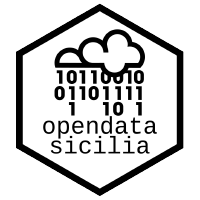

Chiusure Stradali Capodanno 2026
Comune di Palermo

Informazioni
Inizio chiusura
31/12/2025 ore 07:00
Fine chiusura
01/01/2026 ore 07:00
Chiusura al transito veicolare
Divieto di sosta con rimozione
0
Strade
24h
Durata
Elenco Strade
Strade Interessate